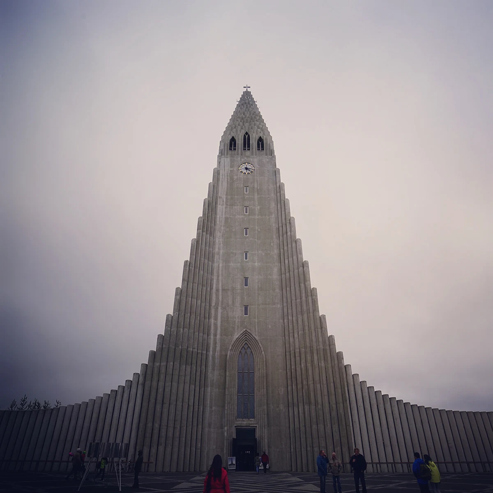

PHOTOPRO / FOR MAC
Make room for your
best photographs.
A quiet place to browse, select and finish your photographs. From your folders. On your Mac.

01 / SELECT
Find what stays.
Browse with the arrow keys. Rate with 1–5. Keep a separate favorite copy with F. Work from local folders or a network disk mounted in Finder.
02 / LOOK CLOSER
Trust the details.
Press Z to load the original pixels at one screen pixel per image pixel. Keep your view as you move through a sequence.
03 / FINISH
Give it a frame.
Crop, try a filter and add a camera-information frame. Export a new PNG at the cropped original resolution. Your original stays intact when editing.
Your photographs.
Your folders.
No account, advertising or analytics in the app. PhotoPro processes images on your Mac. Network disks remain connections you control.
Crops last for the current session. RAW support depends on macOS and the camera format. Deleting a photo moves the original to Trash or a recovery folder; paired RAW deletion can be turned off.
Read the privacy policy ↗PHOTOPRO / FOR MAC
把时间留给
好照片。
从你的文件夹开始，浏览、筛选、裁切与导出。
在 Mac 上，慢慢选出值得留下的画面。
01 / 筛选
留下值得留下的。
方向键翻页，1–5 打星，F 创建收藏副本。从本机文件夹开始，也能选择已经在 Finder 挂载的网络磁盘。
02 / 看清
细节，经得起靠近。
按 Z 加载原图，一个屏幕像素对应一个图像像素。翻阅连拍时，保留你正在看的倍率与位置。
03 / 完成
给照片一个相框。
调整裁切，尝试滤镜，加入相机信息相框。按裁切区域的原始像素导出新 PNG，编辑不会覆盖原图。
你的照片，
你的文件夹。
应用无需账号，不含广告与分析追踪。照片在 Mac 上处理，网络磁盘连接由你选择和管理。
裁切只保留到当前会话结束。RAW 支持取决于 macOS 和相机格式。删除操作会将原图移至废纸篓或恢复文件夹；同名 RAW 连带删除可在侧栏关闭。
阅读隐私声明 ↗